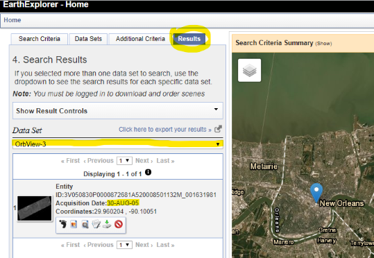
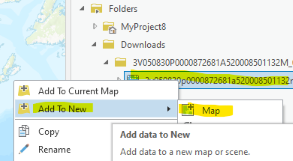
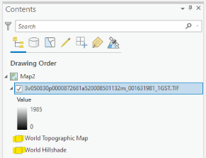
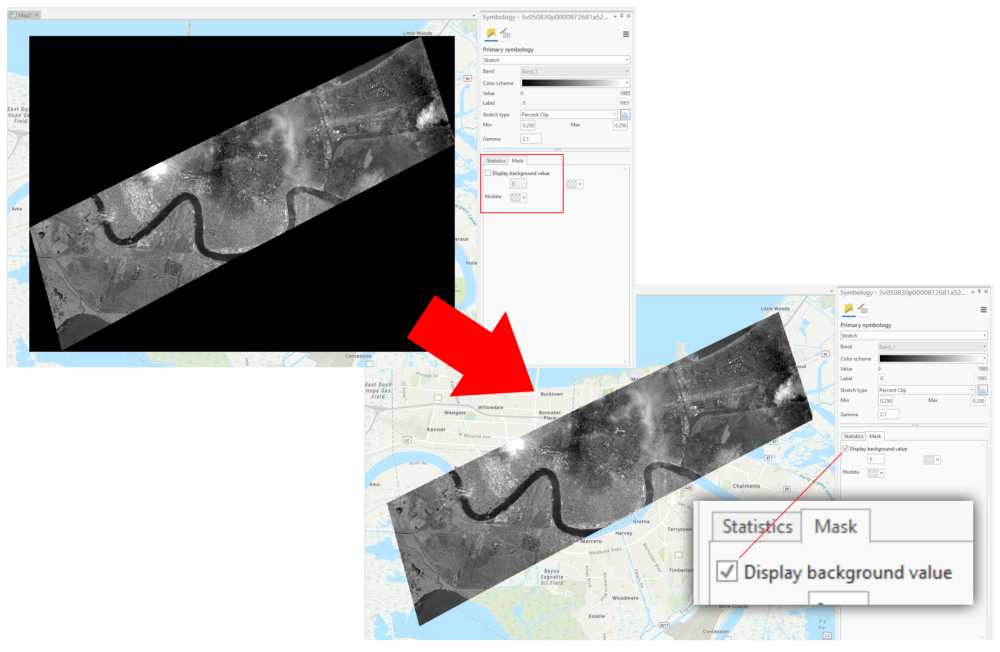
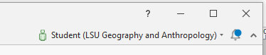
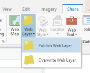
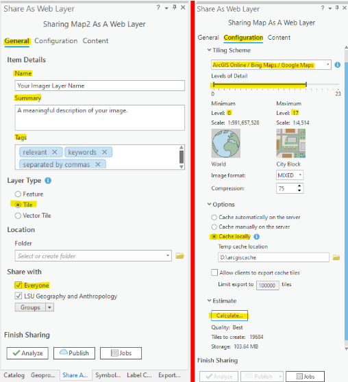

Lab Assignment 5a (optional)
Displaying big images as tiles
Choose a satellite or aerial image and generate a tile cache in ArcGIS Pro. This exercise will use a satellite image of New Orleans but you will need to find your own image. You do not need to create a map or app, only publish the tile layer in ArcGIS Online using your organizational account (not the free public account).
Tiling is a way to display big images in web maps without making the audience download large source images. Tiling breaks images into smaller squares (tiles) that can be displayed quickly on a web map as a layer or basemap. Basemaps are often tile layers.
Data
Download a satellite image from USGS EarthExplorer. This will be the image you open in ArcGIS Pro to create tiles. Earth Explorer lets you search for images from a variety of satellites by specifying a location on the map and, optionally, a date range.
You will have to create an account on EarthExplorer in order to download images.
- Go to the EarthExplorer website at https://earthexplorer.usgs.gov.
-
Pan/zoom the map to an area of interest and click the map to place a marker. The search will only return images that cover the marker. It also lets you mark multiple points to draw a search area.

The point or polygon that you mark on the map will limit your search results to only include images that intersect with your point or polygon. - If helpful, enter a date range, such as
08/29/2005to09/30/2005. - After specifying a location/date, click
Data Sets. Here you can choose specific satellites. Some possibilities:- Commercial Satellites - IKONOS, OrbView, SPOT
- EO-1 - EO-1 ALI
- Landsat - Landsat Collection 1 Level-1 - All
- Sentinel - Sentinel-2
-
Click
Resultsto see a dropdown menu of satellites. Look through them to see which, if any, returned results for your location/dates.

This search for post-Katrina imagery yielded 1 result for the OrbView-3 satellite. - In the
Results, note the icons under each result. These let you view the image footprint, preview, and metadata. There is also an icon to download the image. You will have to log in before downloading images. - After the download completes, you should have a zip file on your computer. You must unzip the file to a folder, then you can add the image to a map in ArcGIS Pro.
Process
- Open ArcGIS Pro and create a new project. If needed, Connect to a folder, such as your Downloads folder in Windows. This will let you browse for your downloaded satellite image.
-
Expand the folder you connected in the
Catalogpane to find your satellite image. You can right click the image and chooseAdd To New>Map, or drag and drop the layer into the current map viewer.

Layers can be added to the current map by dragging and dropping or right-click Add To New > Map. - When you add the image to the map, the view should zoom to the image extent. Make sure it is located in the correct place on Earth. The image layer now also appears in the
Contentspane above the basemaps. -
Uncheck the boxes to hide the basemap.

Image layer listed in the Contents pane. Hiding the basemap will prevent it from being tiled with our image. -
If your image has a black or white background, make its background transparent. Right-click the layer in the
Contentspane, clickSymbology, clickMask, then checkDisplay background value. Hide the collar/background of your image, if it has one.
-
Within ArcGIS Pro, sign into your ArcGIS Online organizational account.

In ArcGIS Pro, sign in using your ArcGIS Online organizational account. -
On the top ribbon, click
Share>Web Layer>Publish Web Layer.

Publishing a layer will give you the option to save a tile cache to ArcGIS Online. -
In the
Share As Web Layerpane, set the following options. It is especially important to chooseCache locallyunder theConfigurationtab (right image below).

Publishing a layer will give you the option to save a tile cache to ArcGIS Online. - Still in the
Share As Web Layerpane, clickAnalyzeto detect errors. If there are none, clickPublish. This process can take several minutes. Do not close ArcGIS Pro until the task is complete! - Once finished, you will be given a link to see your tile layer’s Item Details page in ArcGIS Online. You can also find it in your content in ArcGIS Online.
{kind=link}
Submit
- The URL to the Item Details page of your hosted tile layer. Example:
https://www.arcgis.com/home/item.html?id=ABC123